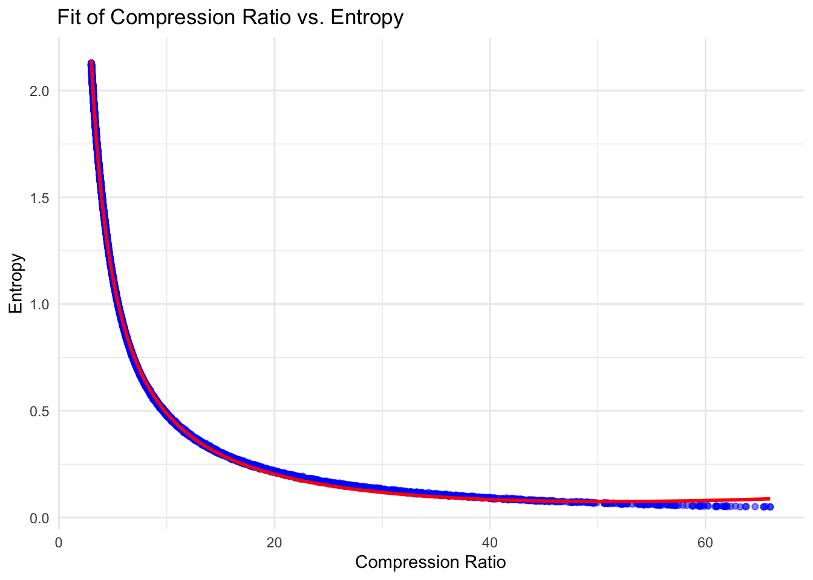
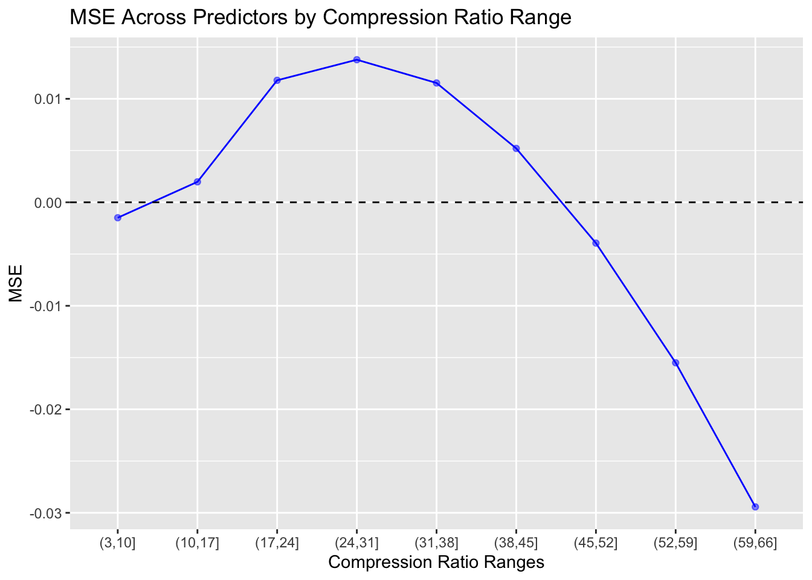

install.packages("git2r", repos = "https://cran.rstudio.com/")Installing package into '/opt/homebrew/lib/R/4.4/site-library'
(as 'lib' is unspecified)install.packages("git2r", repos = "https://cran.rstudio.com/")Installing package into '/opt/homebrew/lib/R/4.4/site-library'
(as 'lib' is unspecified)library(jsonlite)
library(ggplot2)
library(dplyr)
Attaching package: 'dplyr'The following objects are masked from 'package:stats':
filter, lagThe following objects are masked from 'package:base':
intersect, setdiff, setequal, unionlibrary(plotly)
Attaching package: 'plotly'The following object is masked from 'package:ggplot2':
last_plotThe following object is masked from 'package:stats':
filterThe following object is masked from 'package:graphics':
layout# setting working dir
library(git2r)
Attaching package: 'git2r'The following object is masked from 'package:plotly':
configThe following object is masked from 'package:dplyr':
pull# finding the root dir of the repo
repo = repository()
git_root = workdir(repo)
# set root dir as the working dir
setwd(git_root)
# get data
dat = read.csv("./data/calibration/inputs/20240928T014700--npz-calibration.csv")
# filter data
dat = dat |> filter(compression_ratio > 3)
compression_ratio = dat$compression_ratio
entropy = dat$entropynls_custom_model = nls(entropy ~ a / (compression_ratio + b) + c * log(compression_ratio) + d * compression_ratio^2, data = dat, start = list(a = 1, b = 1, c = 0, d = 0))dat$predicted = predict(nls_custom_model, newdata = dat)
dat$residual = dat$entropy - dat$predicted
summary(nls_custom_model)
Formula: entropy ~ a/(compression_ratio + b) + c * log(compression_ratio) +
d * compression_ratio^2
Parameters:
Estimate Std. Error t value Pr(>|t|)
a 4.982e+00 3.600e-03 1383.68 <2e-16 ***
b -7.043e-01 1.758e-03 -400.62 <2e-16 ***
c -2.156e-02 1.770e-04 -121.83 <2e-16 ***
d 2.339e-05 4.225e-07 55.35 <2e-16 ***
---
Signif. codes: 0 '***' 0.001 '**' 0.01 '*' 0.05 '.' 0.1 ' ' 1
Residual standard error: 0.01164 on 10364 degrees of freedom
Number of iterations to convergence: 8
Achieved convergence tolerance: 4.061e-07ggplot(dat, aes(x = compression_ratio, y = entropy)) +
geom_point(color = 'blue', alpha = 0.5) +
geom_line(aes(y = predicted), color = 'red', linewidth = 1) +
labs(title = "Fit of Compression Ratio vs. Entropy",
x = "Compression Ratio",
y = "Entropy") +
theme_minimal()
mse_global = mean(dat$residual^2)
cat("Global MSE: ", mse_global, "\n")Global MSE: 0.0001355058 # bin the data
dat$bin = cut(dat$compression_ratio, breaks = seq(min(dat$compression_ratio), max(dat$compression_ratio), length.out = 10))
mse_bin = aggregate(residual ~ bin, data = dat, FUN = mean)
mse_bin$index = seq(1, nrow(mse_bin), 1)
colnames(mse_bin) = c("bin", "mse", "index")
ggplot(mse_bin, aes(x = bin, y = mse)) +
geom_point(color = 'blue', alpha = 0.5) +
geom_line(color = "blue", group = 1) +
geom_hline(yintercept = 0, color = "black", linetype = "dashed") +
labs(x = "Compression Ratio Ranges", y = "MSE", title = "MSE Across Predictors by Compression Ratio Range")